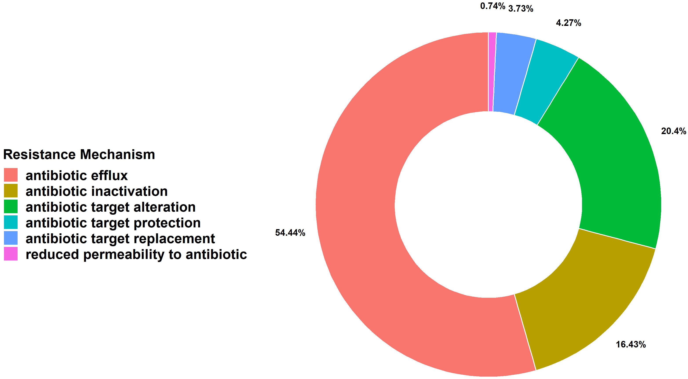
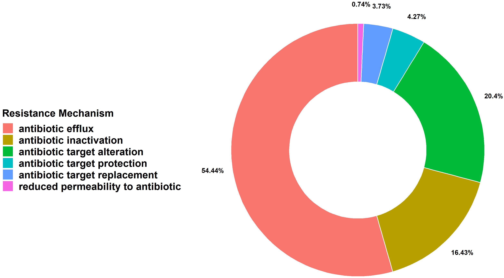

MetaShiny App allows users to process and visualize Metagenomic short-read sequencing data.
- Explore the app’s features with the example count data set pre-loaded by clicking on the Input Data tab.
- Upload your own samples list in the “Input Data” tab.
Features
 
 


Data Visualization
- ARG Mechanisms (Drug Class vs ARG counts, Resistance Mechanisms, ARG Richness, ARG Abundance)
- Alpha Diversity and Abundance Comparison (Box-plots)
- Clustering (HeatMap, PCA Plot)
Data Format
- Must be a .csv comma-separated-value file.
- File must have two columns with the headers 1: Sample_Id, 2: Group.
- 1: Sample_Id: The name of the sample.
- 2: Group: The group that the sample belongs to.
- The first row of the file is the header.
Input Data
- Each row from the first column representes the sample name.
- Each row from the second column representes the group (Control or Case).

Output Data
- Each row of the 3rd column represents the ARG term.
- Additional columns provide information about
- Drug Class
- Resistance Mechanism
- ARG Counts
- Bacterial Classification, etc.

Additional Information
Additional Information and help are provided under the “Additional Information” tab.
App Info
The MetaShiny App has been develoed by Nirmal Singh Mahar, Anshul Budhraja, Suman Pakala, Ishaan Gupta and S.V.Rajagopala.
Please cite our App:
[]
The source code of MetaShiny is available on Github.
We would appreciate reports of any issues with the app via the issues option of Github